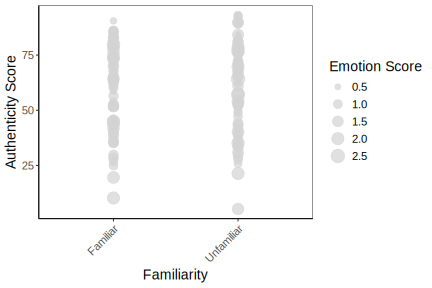
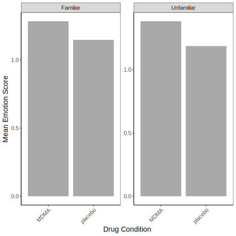
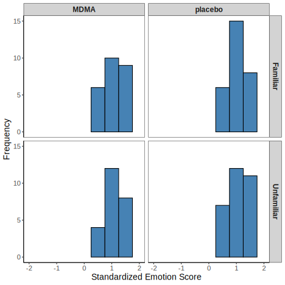

| Model | Term | Estimate | Std. Error | DF | t-value | p-value |
|---|---|---|---|---|---|---|
| Authenticity | (Intercept) | 59.463 | 3.563 | 94 | 16.687 | 0.000 |
| Authenticity | FamiliarityUnfamiliar | -0.030 | 4.165 | 94 | -0.007 | 0.994 |
| Authenticity | Drugconditionplacebo | 2.161 | 4.203 | 94 | 0.514 | 0.608 |
| Authenticity | FamiliarityUnfamiliar:Drugconditionplacebo | 1.569 | 5.891 | 94 | 0.266 | 0.790 |
| Emotion | (Intercept) | 1.285 | 0.083 | 94 | 15.444 | 0.000 |
| Emotion | FamiliarityUnfamiliar | 0.097 | 0.100 | 94 | 0.966 | 0.337 |
| Emotion | Drugconditionplacebo | -0.134 | 0.101 | 94 | -1.320 | 0.190 |
| Emotion | FamiliarityUnfamiliar:Drugconditionplacebo | -0.062 | 0.142 | 94 | -0.439 | 0.661 |
| emo_pos | (Intercept) | 0.795 | 0.062 | 94 | 12.902 | 0.000 |
| emo_pos | FamiliarityUnfamiliar | 0.088 | 0.075 | 94 | 1.168 | 0.246 |
| emo_pos | Drugconditionplacebo | -0.067 | 0.076 | 94 | -0.883 | 0.379 |
| emo_pos | FamiliarityUnfamiliar:Drugconditionplacebo | -0.038 | 0.106 | 94 | -0.352 | 0.725 |
| emo_neg | (Intercept) | 0.364 | 0.048 | 94 | 7.548 | 0.000 |
| emo_neg | FamiliarityUnfamiliar | 0.002 | 0.058 | 94 | 0.036 | 0.971 |
| emo_neg | Drugconditionplacebo | -0.069 | 0.059 | 94 | -1.168 | 0.246 |
| emo_neg | FamiliarityUnfamiliar:Drugconditionplacebo | -0.003 | 0.083 | 94 | -0.042 | 0.966 |
| emo_anx | (Intercept) | 0.082 | 0.016 | 94 | 5.229 | 0.000 |
| emo_anx | FamiliarityUnfamiliar | 0.005 | 0.020 | 94 | 0.263 | 0.793 |
| emo_anx | Drugconditionplacebo | -0.013 | 0.020 | 94 | -0.612 | 0.542 |
| emo_anx | FamiliarityUnfamiliar:Drugconditionplacebo | -0.013 | 0.029 | 94 | -0.460 | 0.646 |
| emo_anger | (Intercept) | 0.068 | 0.015 | 94 | 4.491 | 0.000 |
| emo_anger | FamiliarityUnfamiliar | -0.012 | 0.020 | 94 | -0.604 | 0.547 |
| emo_anger | Drugconditionplacebo | 0.008 | 0.021 | 94 | 0.393 | 0.695 |
| emo_anger | FamiliarityUnfamiliar:Drugconditionplacebo | -0.016 | 0.029 | 94 | -0.542 | 0.589 |
| emo_sad | (Intercept) | 0.071 | 0.015 | 94 | 4.641 | 0.000 |
| emo_sad | FamiliarityUnfamiliar | -0.016 | 0.019 | 94 | -0.859 | 0.393 |
| emo_sad | Drugconditionplacebo | -0.036 | 0.019 | 94 | -1.919 | 0.058 |
| emo_sad | FamiliarityUnfamiliar:Drugconditionplacebo | 0.037 | 0.026 | 94 | 1.427 | 0.157 |
| focuspast | (Intercept) | 4.816 | 0.218 | 94 | 22.082 | 0.000 |
| focuspast | FamiliarityUnfamiliar | 0.150 | 0.256 | 94 | 0.585 | 0.560 |
| focuspast | Drugconditionplacebo | -0.287 | 0.259 | 94 | -1.110 | 0.270 |
| focuspast | FamiliarityUnfamiliar:Drugconditionplacebo | 0.276 | 0.362 | 94 | 0.762 | 0.448 |
| focuspresent | (Intercept) | 7.331 | 0.247 | 94 | 29.642 | 0.000 |
| focuspresent | FamiliarityUnfamiliar | -0.403 | 0.272 | 94 | -1.481 | 0.142 |
| focuspresent | Drugconditionplacebo | 0.155 | 0.275 | 94 | 0.565 | 0.574 |
| focuspresent | FamiliarityUnfamiliar:Drugconditionplacebo | -0.167 | 0.385 | 94 | -0.434 | 0.666 |
| focusfuture | (Intercept) | 1.043 | 0.082 | 94 | 12.668 | 0.000 |
| focusfuture | FamiliarityUnfamiliar | -0.082 | 0.099 | 94 | -0.822 | 0.413 |
| focusfuture | Drugconditionplacebo | -0.035 | 0.100 | 94 | -0.350 | 0.727 |
| focusfuture | FamiliarityUnfamiliar:Drugconditionplacebo | 0.094 | 0.141 | 94 | 0.672 | 0.503 |
Chemical Conversations: Linguistic Markers of Authenticity and Emotionality Under MDMA Influence
Deeksha Handa
Social Sciences Department, University of Chicago
Abstract
MDMA (3,4-methylenedioxymethamphetamine) has been widely studied for its potential therapeutic effects, particularly in facilitating emotional openness and enhancing psychotherapy outcomes. Recent research suggests that MDMA alters speech patterns, increasing emotional expressivity and authenticity, which may play a crucial role in therapeutic settings. This study aims to examine the linguistic markers of authenticity, emotionality, and fluency under the influence of MDMA, particularly in the context of familiarity with a conversational partner. Using a secondary analysis of data collected in a controlled clinical setting, this study employs linguistic analysis techniques, including the Linguistic Inquiry and Word Count (LIWC) tool, to quantify changes in speech. Participants engaged in conversations under four conditions—MDMA vs. placebo and familiar vs. unfamiliar partner—to assess the interaction of drug effects and social context. We hypothesize that MDMA will increase authenticity and emotional expression with familiarity further amplifying emotional expressivity. Understanding these linguistic shifts can provide valuable insights into MDMA-assisted therapy (MDMA-AT), informing therapeutic approaches and practitioner training.
Keywords: MDMA, MDMA-AT, linguistic, LIWC
Chemical Conversations: Linguistic Markers of Authenticity and Emotionality Under MDMA Influence
3,4-methylenedioxymethamphetamine (MDMA) is a synthetic drug categorized as both a stimulant and a psychedelic, with effects comparable to methamphetamines (“MDMA (Ecstasy/Molly).” 2024). It is more commonly known as ecstasy (pill form) and molly (crystal form). After its classification as a Schedule I drug in 1985,unregulated research and any clinical use of MDMA to treat psychological disorders like Post-Traumatic Stress Disorder (PTSD) came to a sudden halt. Initial research and testing from the 1970s had shown MDMA’s potential as a less toxic,legal alternative to MDA (3,4-methylenedioxy-amphetamine) for assisting therapy seekers intheir emotional expression. Its clinical value centered on MDMA’s unique ability to help patients open-up emotionally, encouraging deeper thought and introspection without overwhelming psychedelic hallucinations. Leading therapists and scholars within the field believed that these effects would enable otherwise hard to articulate experiences to become easily expressible in therapeutic settings (Passie, 2018).
Recent Clinical Developments and Methodological Challenges
In recent years, however, 11 Phase 2 and two Phase 3 trials of MDMA-Assisted Therapy (MDMA-AT) for PTSD treatment have been approved and conducted. Notably, a Phase 3 trial from 2021 involved participants receiving three MDMA doses over an 18-week period along with manualized therapy, with significant improvement compared to placebo: over 67% of participants no longer met the diagnostic threshold for PTSD across a broad range of symptoms, compared to 32% in the placebo group (Mitchell et al., 2021). Additional evidence suggests that a considerable proportion of self-reported substance users support MDMA research (68.1%), believe in the potential of MDMA-assisted therapy to help with alcohol and drug abuse Chemical Conversations 2 disorders and it’s common comorbidity, PTSD (70.1%) and would be willing to participate if eligible (58.8%), across diverse racial and ethnic groups— a previous concern in the context of equitable distribution of MDMA-assisted therapy, given the disproportionate extent to which substance abuse (and it’s comorbidities) affect minorities (Jones, 2023). Even with these advances, the road to MDMA-AT’s broad approval and adoption is long and complex. This is due to several concerns in the community, such as the potential for abuse and the investment required to train therapists with proper protocols (Madero & Alvarez, 2023). Additionally, there is a concern that persistent use of MDMA could lead to decreased cognitive function, which is a significant argument against MDMA-AT (Wagner et al., 2015). A gaping issue here is that it is almost impossible to construct a double-blind between placebo and MDMA conditions, given the obvious external effects of MDMA, which could impact the results. This exact rationale was behind the recent rejection of MDMA as a form or aid of treatment (KUPFERSCHMIDT, 2024). There are definite methodological advances that need to be put in place which accurately weight the risk and benefits of such therapeutic treatments including appropriate training and preparation for both the therapist and the individual receiving MDMA. Wider application for such methods will require research and analysis that cover current gaps about our knowledge of MDMA and the experience it induces, especially in a clinical setting with a practitioner.
Research Gap and Thesis formation
One such analysis of interest is observing and understanding overt behavioral changes under MDMA influence, more specifically linguistic implications, to potentially inform the construction of a therapeutic aid. Since a critical part of PTSD therapy, like most others, involves discussing traumatic experiences and articulating emotions, understanding MDMA’s effects on speech could deepen our knowledge of its impact beyond general emotional facilitation. Understanding these changes could help practitioners facilitate individuals who find it difficult to connect with or express emotions effectively in clinical settings. Some insights on this topic can be found in a study by Baggott et al. (2015), which demonstrated that MDMA alters speech content, particularly by increasing the use of social and emotional words during discussions about intimate relationships. The study found that MDMA enhances both positive and negative emotional language, using a software that assesses semantic content, the LIWC (Linguistic Inquiry and Word Count) software (Chung & Pennebaker, 2018) potentially helping patients in therapy communicate complex emotions more effectively. These findings align with anecdotal reports of MDMA encouraging emotional disclosure and suggest that MDMA may help patients develop a language of emotional insight essential for successful trauma processing in therapy (Baggott et al., 2015). Further knowledge into MDMA’s effects on speech are provided in a study by Marrone et al. (2010), which compared MDMA (dose) and methamphetamine (dose) on verbal fluency and coherence. This within-participant study showed that while methamphetamine increased speech fluency (ability to accurately string words together) and coherence (logical and consistent), MDMA tended to decrease fluency and impacted participants’ self-rated concentration. Movie descriptions following MDMA were self-rated as less coherent than those after methamphetamine, suggesting that MDMA’s effects on language may differ significantly from other amphetamines. While these studies examined MDMA’s effects on linguistic fluency and emotional language in addition to scraping the surface with authenticity, they did so in a setting with no direct interaction with the participant. This thesis proposes an added variable of familiarity and unfamiliarity to an individual in the know of the procedure, known as the confederate. Including this variable provides a novel perspective on the research of MDMA, it may help decipher if presence and interaction with an individual (or practitioner) can encourage the participant even further to elucidate their emotional state. This addition may not only help measure the viability of the therapeutic procedure but also inform policies and training for it. Questions of the additive nature of both MDMA and familiarity to the individual are pertinent here.
Research Questions and Hypotheses
This thesis primarily aims to identify linguistic markers of authenticity and emotionality under the influence of MDMA to understand the extent of MDMA-assisted therapy (MDMA- AT) in in addition to the modulating effects of partner familiarity. To effectively examine these aims, it is essential to first define and contextualize the primary concepts relevant to this study: Authenticity and Emotionality. Authenticity refers to the degree to which an individual is monitoring their speech (LIWC — LIWC Analysis, n.d.), while emotionality is more about the actual words spoken and their score within LIWC.
I hypothesize that MDMA will increase linguistic markers of authenticity and emotionality compared to placebo (Baggott et al., 2015; Molla et al., 2023) I expect to seehigher authenticity and emotionality markers in conversations with familiar partners. Familiarity can create a sense of comfort, making speech more natural and spontaneous (LIWC — LIWC Analysis, n.d.). On the other hand, when interacting with an unfamiliar partner, individuals may be more cautious about how they present themselves, leading to my hypothesis of a decrease in authenticity and emotionality markers as they self-monitor their language more closely.
Methods
This thesis project presents a secondary analysis of data from a clinical MDMA study performed at the Human Behavioral Pharmacology Lab by P.I. Harriet de Wit, post-doc Hanna Molla and other members of the Lab.
Ethical Approval
This study was approved by the University of Chicago. All participants provided informed consent to participate and were given a 250 dollars incentive after all sessions and 50 dollars if theydropped out before completion.
Participants
Healthy male and non-pregnant female healthy adults, aged 18 to 35, were recruited through posters, print and internet advertisements, and word-of-mouth referrals (n=45, f = 20; 44.5% and m= 25; 55.5%). Eligible candidates were those who reported prior psychedelic use (1-40 occasions) and demonstrated verbal fluency in English. All participants passed comprehensive medical and psychiatric screenings, including a structured clinical interview, SCL-90R assessment, electrocardiogram, and physical examination. Major exclusion mental and physical criteria include previous treatment for drug or alcohol problems or current substance dependence (American Psychiatric Association, 2013); past year panic disorder, history of psychotic or manic episodes (American Psychiatric Association, 2013); cardiovascular illness or high bloodpressure, abnormal EKG, and pregnancy or lactation (females).
Procedure
Participants engaged in four laboratory sessions, conducted in random order: Receive MDMA (100 mg) and engage in a conversation with an Unfamiliar partner (MU), Receive placebo and engage in a conversation with an Unfamiliar partner (PU), Receive MDMA (100 mg) and engage in a conversation with a Familiar partner (MF), and Receive placebo and engage in a conversation with a Familiar partner (PF).
The partners were strangers before each session, but before participants received drug, familiarity was established with two of the partners with a bonding conversation procedure (Aron et al., 1992, 1997). One hour before ingesting the drug or placebo, participants either engaged in a 45-min conversation to establish familiarity with a partner (familiar sessions), or they spent time in a room without talking (Unfamiliar sessions).
On each session, baseline measures of heart rate, blood pressure, and oxytocin (plasma sample were collected) were obtained, and participants were tested for recent drug use and pregnancy. Then the participants spent 45 minutes in the same room as their partners with or without social interaction and filled out surveys. Following this they ingested MDMA (100 mg) or a placebo capsule, under a double-blind condition. Subjective measures were taken at every 30-minute mark. At the peak drug effect (60 minutes), the confederate joined the participant for a 15-minute test conversation (which was audio recorded), this conversation was about an important person in the participant’s life which they had already listed at the orientation. At the end of this conversation and then the entire session, additional plasma samples were collected. At the 240-minute mark, the participant was provided with a snack and allowed to leave at the experimenter’s discretion.
Data Cleaning and Outcome Measures
The main source of data in this project are the audio recordings obtained through test conversations. These will be transcribed into text files using Happy Scribe and human review, with dialogues from the confederate removed. This clean text will be run through Linguistic Inquiry and Word Count (LIWC), which is designed to count words associated with specific psychological and grammatical dimensions to provide quantitative data (Chung & Pennebaker, 2018).
For perceived authenticity, LIWC’s developers categorized it as the degree to which an individual self-monitors their speech. While high authenticity scores can be observed in impromptu conversations between friends, prewritten speeches tend to score lower (LIWC — LIWC Analysis, n.d.). This measure has been utilized by (Markowitz et al., 2023) in studying the social benefits of authentic speech.
For emotional content (emotionality), LIWC analyzes both positive and negative emotional expressions through specific word categories. Positive emotions are tracked through words like “good” and “love,” while negative emotions are identified through terms such as “bad” and “hurt.” The analysis further breaks down negative emotions into specific states, including anxiety (measured through words like “worry” and “nervous”), anger (identified by terms such as “mad” and “angry”), and sadness (tracked through words like “cry” and “disappoint”).
Results
Data Cleaning
Data preprocessing involved several steps to prepare the data for analysis. First, string manipulation was used to extract the session number from the Filename variable and create a more readable Session label (e.g., ‘Session 1’). Next, the Familiarity variable was refined using factor manipulation techniques. Levels were reordered to set ‘Familiar’ as the baseline, and less frequent levels were grouped to simplify subsequent analyses. Finally, the Drugcondition variable was recoded into a numeric Drugcondition_coded variable for statistical modeling
Descriptive Statistics
We began by examining the basic characteristics of our data using descriptive statistics. Mean Authenticity and Emotion scores were calculated overall. A custom calculate_mean function was employed to ensure accurate handling of potential missing data during these calculations and to output those results for further tabulation and further analysis. This approach, implemented downstream of variable standardization, was designed to minimize risks stemming from type-based mismatches as downstream calculations are computed and ultimately informs appropriate test. To facilitate a comprehensive examination across experimental groups, these key metrics were compared across drug conditions and group size which was also constructed for sample quality, into Table 1.
Visual Representation
The statistical analysis of the data provides important insights into the relationships between the variables of interest, including the influence of Drug Condition and Familiarity on Authenticity and Emotion scores. As outlined in the preceding table, significant differences were observed between the various drug conditions, with MDMA participants demonstrating increased emotional expressivity compared to those under the placebo condition. Additionally, familiarity with the conversational partner further modulated the effect of the drug, enhancing the emotionality and authenticity in conversations.
To better illustrate these findings, the following figures present graphical representations of these relationships. Figure 1 (scatter plot) visualizes the interaction between Authenticity and Familiarity under different drug conditions. The scatter plot highlights how participants in the MDMA condition showed higher authenticity ratings, with greater variability in the Familiarity condition. The visual differentiation between drug conditions offers a clear indication of how MDMA affects emotional expression across varying levels of familiarity with the conversational partner.
Figure 2 (bar plot) shows the mean Emotion scores across the drug conditions and familiarity levels, providing a summary of the emotional expression under MDMA and placebo conditions. This plot complements the statistical findings by revealing the nuanced differences in emotionality, particularly within the Familiarity factor. The facet breakdown by familiarity level underscores the importance of context in how emotionality is expressed, particularly when MDMA is involved.
Together, the statistical results and the figures present a cohesive narrative of how MDMA influences linguistic markers of authenticity and emotionality, with social context (familiarity) playing a critical role in amplifying these effects.
Note
Each point represents a participant’s Authenticity and Emotion scores in a given session. Point size indicates the Emotion score, and color indicates the Drug Condition.
Note
Bars represent the mean Emotion score for each Drug Condition, separated by Familiarity level. The y-axis scales are allowed to vary freely between facets.
The findings from this MDMA/placebo comparison reveal a nuanced picture of how psychoactive substances may influence perceptions of authenticity and emotional response. While MDMA showed slightly lower mean authenticity scores than placebo (62.63 vs. 59.6), the considerable overlap in distributions and high variability (SDs = 20.96 for MDMA, and 19.05 for Placebo) suggests individual experiences varied widely, with some participants potentially experiencing profound authenticity increases while others experienced decreases. The difference between conditions was 3.03 points on the authenticity scale.
Similarly, the modest elevation in emotional response under MDMA (1.33 vs. 1.17) likely masks significant individual variation in emotional experiences (SDs = 0.51 for MDMA, and 0.43 for Placebo). The percentage increase in emotional response with MDMA compared to placebo was approximately 14.3%. The drug condition with the highest mean authenticity score was placebo.
Perhaps most intriguing is the counterintuitive relationship between familiarity and both measures, where unfamiliar stimuli consistently elicited stronger responses across both conditions, hinting at complex interactions between novelty, drug effects, and subjective experience. The coefficient of variation for authenticity scores was 35.2% for MDMA and 30.4% for placebo, indicating the relative dispersion of scores. These patterns underscore how pharmacological interventions like MDMA may not produce uniform effects across individuals, but rather interact with personal factors and contextual elements in ways that traditional statistical averages may not fully capture.
Hypothesis testing
To examine the effects of MDMA and familiarity on linguistic markers of authenticity and emotionality, we fitted a series of linear mixed-effects models using the nlme package in R. Separate models were fit for each dependent variable: Authenticity, overall Emotion, positive emotion (emo_pos), negative emotion (emo_neg), anxiety (emo_anx), anger (emo_anger), sadness (emo_sad), past focus (focuspast), present focus (focuspresent), and future focus (focusfuture). All models included fixed effects for Familiarity (Familiar, Unfamiliar), Drugcondition (MDMA, Placebo), and their interaction. Random intercepts for SubjectID were included to account for the repeated-measures nature of the data. Table 2 presents the results of these models.
Visual representation
Figure 3 displays the distribution of standardized emotion scores across the four experimental conditions (MDMA/Familiar, MDMA/Unfamiliar, Placebo/Familiar, Placebo/Unfamiliar). Visual inspection of the histograms reveals considerable variability within each condition, with no clear, consistent differences in the shape or central tendency of the distributions across the groups. The distributions appear relatively flat, with scores ranging primarily between -2 and +2 standard deviations.
Table 1
Discriptive Statistics
| Drug condition | Frequency | Variable | Mean | Standard Deviation |
|---|---|---|---|---|
| MDMA | 65 | Authenticity | 59.598308 | 20.9559477 |
| MDMA | 65 | Emotion | 1.333692 | 0.5061453 |
| placebo | 65 | Authenticity | 62.631692 | 19.0450668 |
| placebo | 65 | Emotion | 1.166923 | 0.4305517 |
Figure 1
Scatter plot of Authenticity vs Familiarity by Drug Condition

Figure 2
Mean Emotion Score by Drug Condition and Familiarity

Figure 3
Distribution of Emotion Scores by Familiarity and Drug Condition

References
American Psychiatric Association. (2013). Diagnostic and Statistical Manual of Mental Disorders (Fifth Edition). American Psychiatric Association. https://doi.org/10.1176/appi.books.9780890425596
Aron, A., Aron, E. N., & Smollan, D. (1992). Inclusion of Other in the Self Scale and the structure of interpersonal closeness. Journal of Personality and Social Psychology, 63(4), 596–612. https://doi.org/10.1037/0022-3514.63.4.596
Aron, A., Melinat, E., Aron, E. N., Vallone, R. D., & Bator, R. J. (1997). The Experimental Generation of Interpersonal Closeness: A Procedure and Some Preliminary Findings. Personality and Social Psychology Bulletin, 23(4), 363–377. https://doi.org/10.1177/0146167297234003
Baggott, M. J., Kirkpatrick, M. G., Bedi, G., & De Wit, H. (2015). Intimate insight: MDMA changes how people talk about significant others. Journal of Psychopharmacology, 29(6), 669–677. https://doi.org/10.1177/0269881115581962
Chung, C. K., & Pennebaker, J. W. (2018). What Do We Know When We LIWC a Person? Text Analysis as an Assessment Tool for Traits, Personal Concerns and Life Stories. In The SAGE Handbook of Personality and Individual Differences: Volume I: The Science of Personality and Individual Differences (pp. 341–360). SAGE Publications Ltd. https://doi.org/10.4135/9781526451163.n16
Jones, J. L. (2023). Perspectives on the therapeutic potential of MDMA: A nation-wide exploratory survey among substance users. Frontiers in Psychiatry, 14, 1096298. https://doi.org/10.3389/fpsyt.2023.1096298
KUPFERSCHMIDT, K. (2024). FDA rejected MDMA-assisted PTSD therapy. Other psychedelics firms intend to avoid that fate. Science.
Madero, S., & Alvarez, O. D. (2023). Premise, promise and challenges of MDMA assisted therapy for PTSD. European Neuropsychopharmacology, 70, 19–20. https://doi.org/10.1016/j.euroneuro.2023.02.002
Markowitz, D. M., Kouchaki, M., Gino, F., Hancock, J. T., & Boyd, R. L. (2023). Authentic First Impressions Relate to Interpersonal, Social, and Entrepreneurial Success. Social Psychological and Personality Science, 14(2), 107–116. https://doi.org/10.1177/19485506221086138
Marrone, G. F., Pardo, J. S., Krauss, R. M., & Hart, C. L. (2010). Amphetamine analogs methamphetamine and 3,4-methylenedioxymethamphetamine (MDMA) differentially affect speech. Psychopharmacology, 208(2), 169–177. https://doi.org/10.1007/s00213-009-1715-0
MDMA (Ecstasy/Molly). (2024). NIDA.
Mitchell, J. M., Bogenschutz, M., Lilienstein, A., Harrison, C., Kleiman, S., Parker-Guilbert, K., Ot’alora G., M., Garas, W., Paleos, C., Gorman, I., Nicholas, C., Mithoefer, M., Carlin, S., Poulter, B., Mithoefer, A., Quevedo, S., Wells, G., Klaire, S. S., Van Der Kolk, B., … Doblin, R. (2021). MDMA-assisted therapy for severe PTSD: A randomized, double-blind, placebo-controlled phase 3 study. Nature Medicine, 27(6), 1025–1033. https://doi.org/10.1038/s41591-021-01336-3
Molla, H., Lee, R., Lyubomirsky, S., & De Wit, H. (2023). Drug-induced social connection: Both MDMA and methamphetamine increase feelings of connectedness during controlled dyadic conversations. Scientific Reports, 13(1), 15846. https://doi.org/10.1038/s41598-023-43156-0
Passie, T. (2018). The early use of MDMA (“Ecstasy”) in psychotherapy (1977–1985). Drug Science, Policy and Law, 4, 2050324518767442. https://doi.org/10.1177/2050324518767442
Wagner, D., Tkotz, S., Koester, P., Becker, B., Gouzoulis-Mayfrank, E., & Daumann, J. (2015). Learning, Memory, and Executive Function in New MDMA Users: A 2-Year Follow-Up Study. Frontiers in Neuroscience, 9. https://doi.org/10.3389/fnins.2015.00445